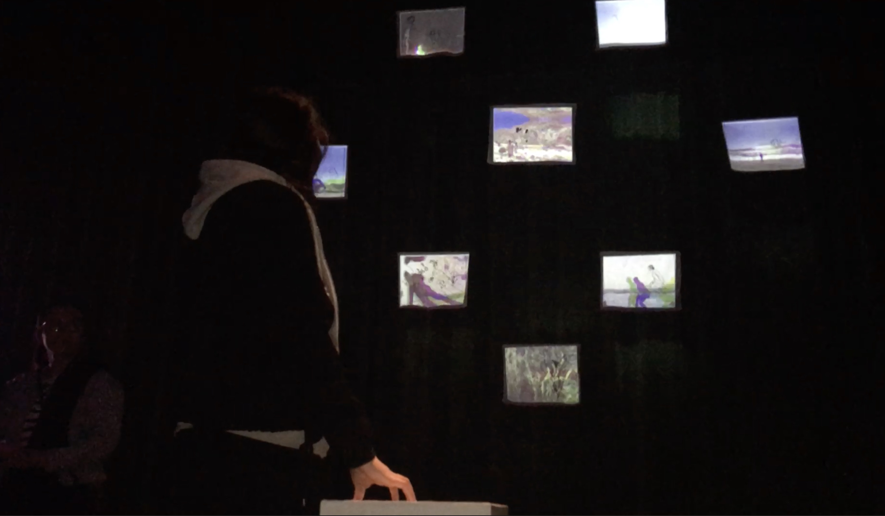

AuroraPrint
Inspiration
Aurora Print was my first time tinkering with physical computing for a large scale installation. The idea started after watching Don Hertzfeldt’s A World of Tomorrow. The line “I opened up a gallery of anonymous memories” had become stuck in my mind and inspired me to create my own version. Vague but collosal memories accumulate when you start to acclimate to a new zone, or geographical area. I wanted to change perspective to the idea of sharing one's own memories. The structure hung from the ceiling all on the same x plane. But at different x and y planes forming an environment inn which you stare upward, thus an aurora state of memories.
Implementation
The project utilizes multiple facets of computational methods. A pulse sensor takes heartbeat input as a method of animating a still image. RGB channels, or the three channels of color often to decsribe color on the web are warped and shifted using GLSL Shaders. A projector uses madmapper to use syphon input to display a web page onto fabric hangings. For more implementation visit